Quantum computing and Bitcoin
This report argues that the relevant quantum risk for Bitcoin and Ethereum is not SHA-256, but ECDSA: a cryptographically relevant quantum computer running Shor's algorithm could derive private keys from exposed public keys and enable storage or transit attacks.
It frames post-quantum migration as a coordination problem across consensus rules, wallets, exchanges, inactive addresses, and user action. It also tracks quantum hardware, error-correction, and algorithmic progress; government and Web2 post-quantum migration; and the Quantum Resistant Ledger as an example of a live quantum-resistant blockchain.
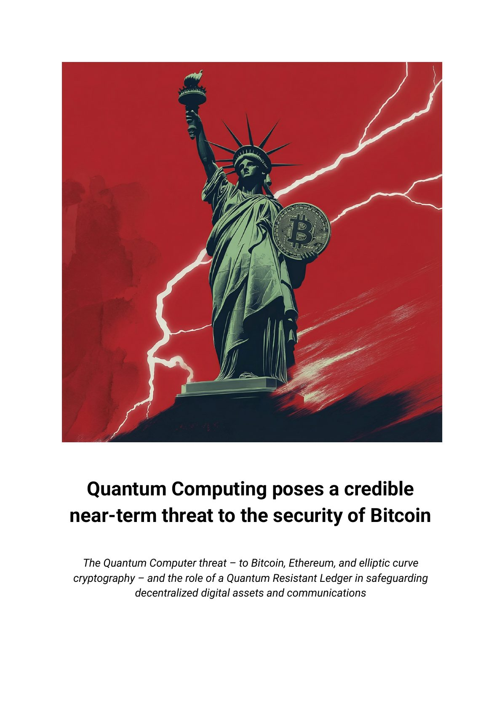
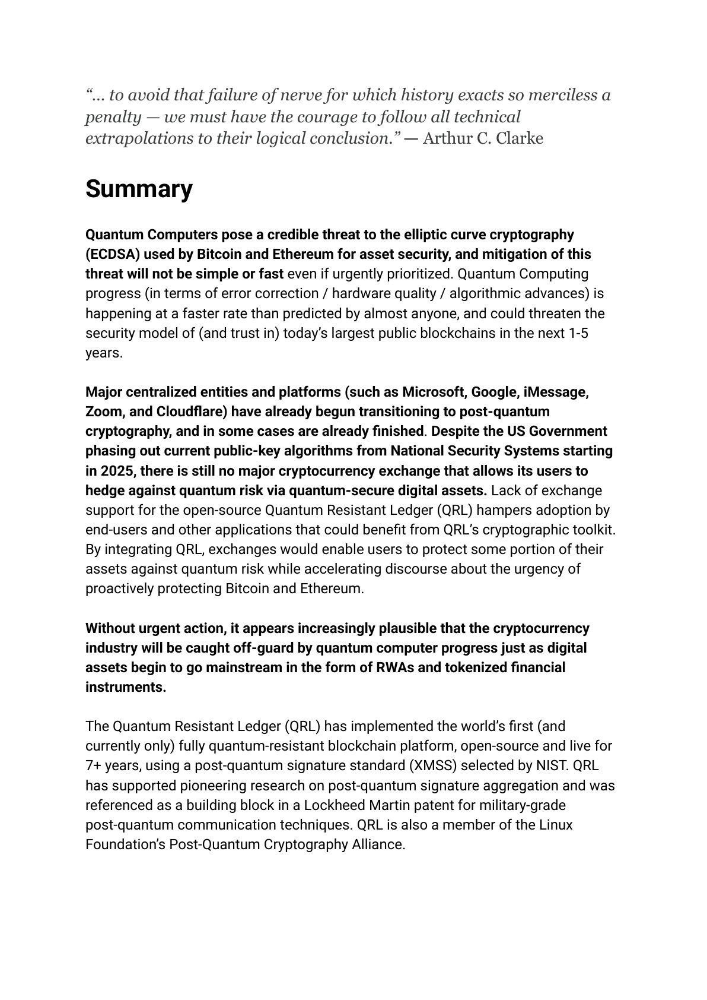
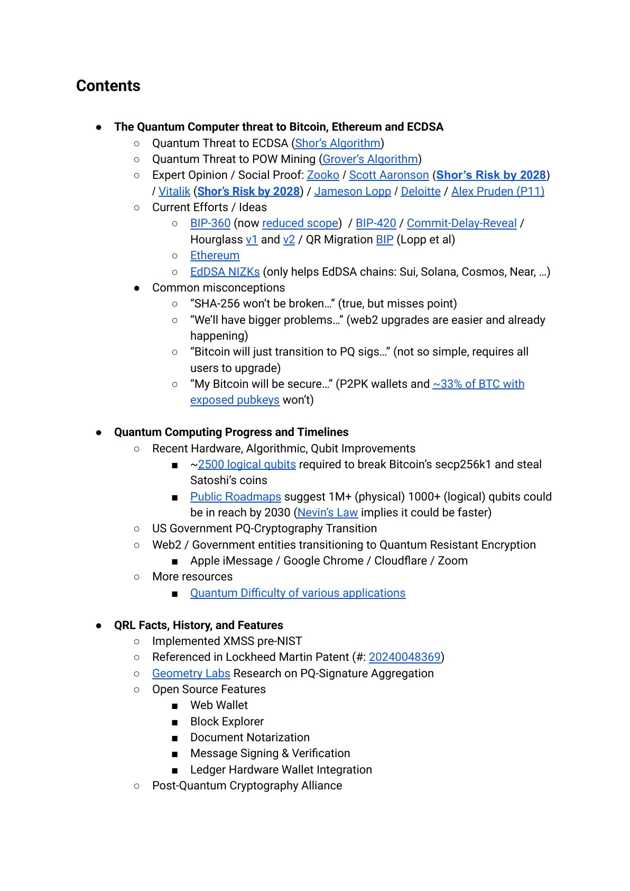
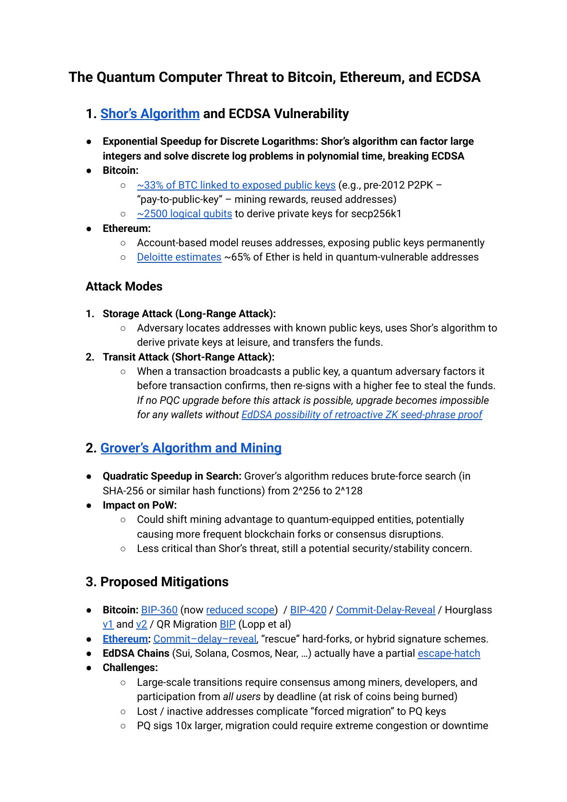
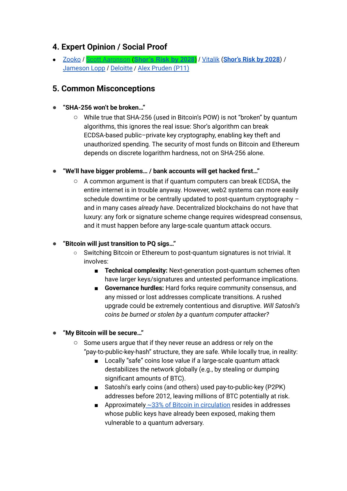
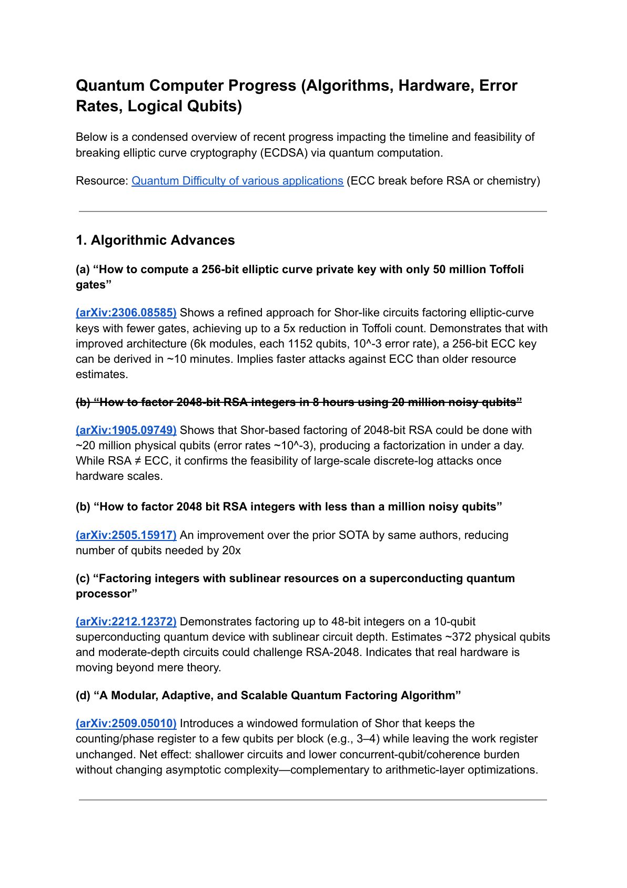
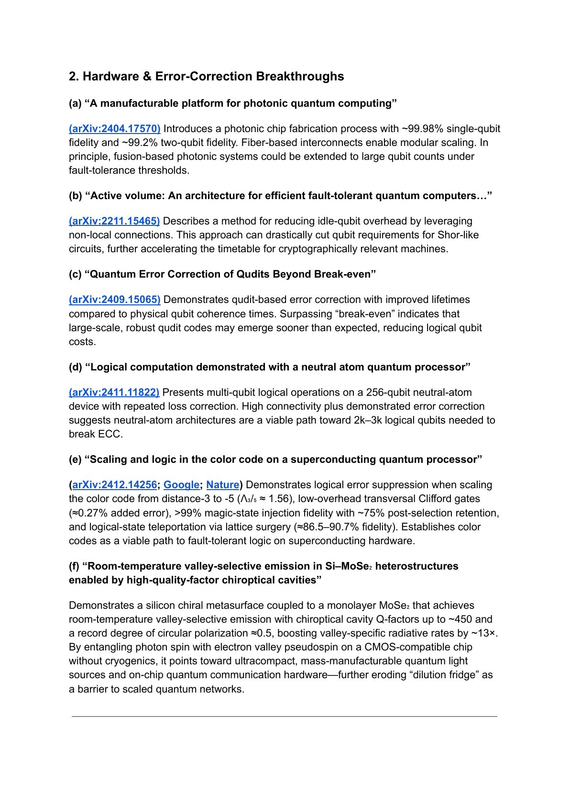
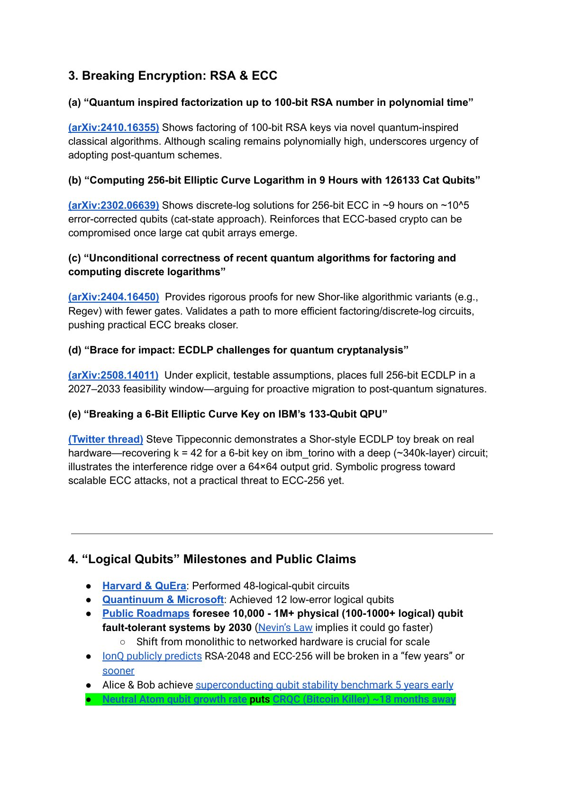
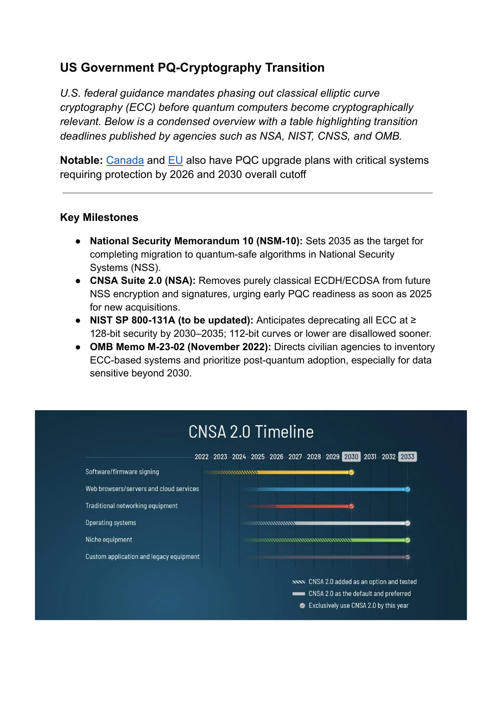
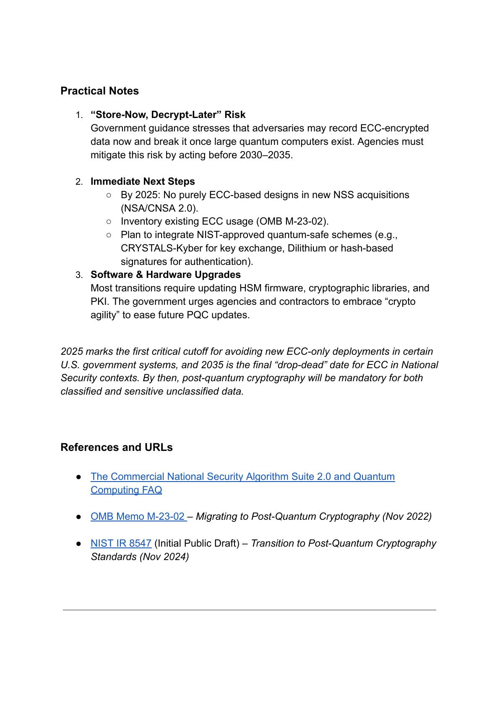
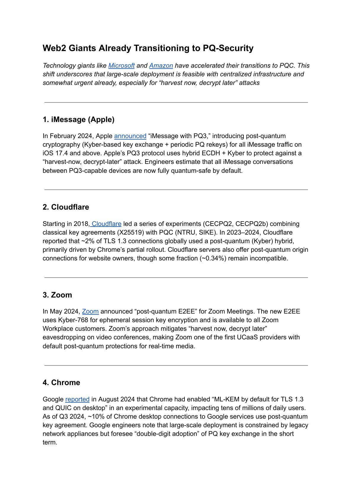
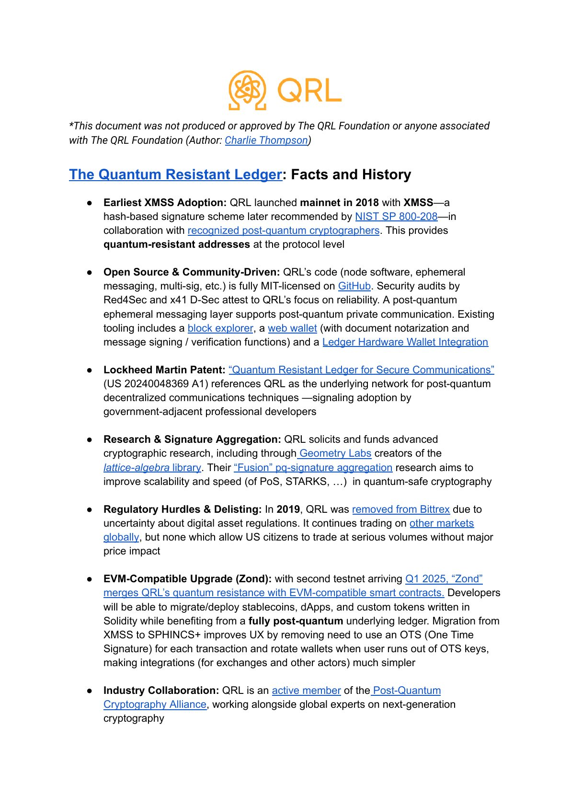
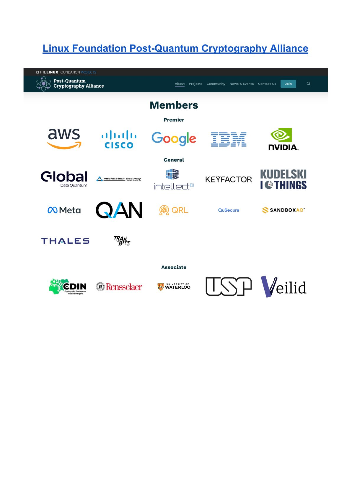